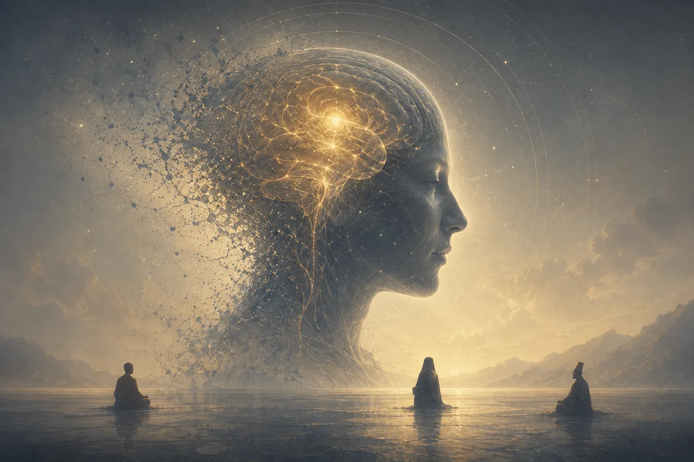
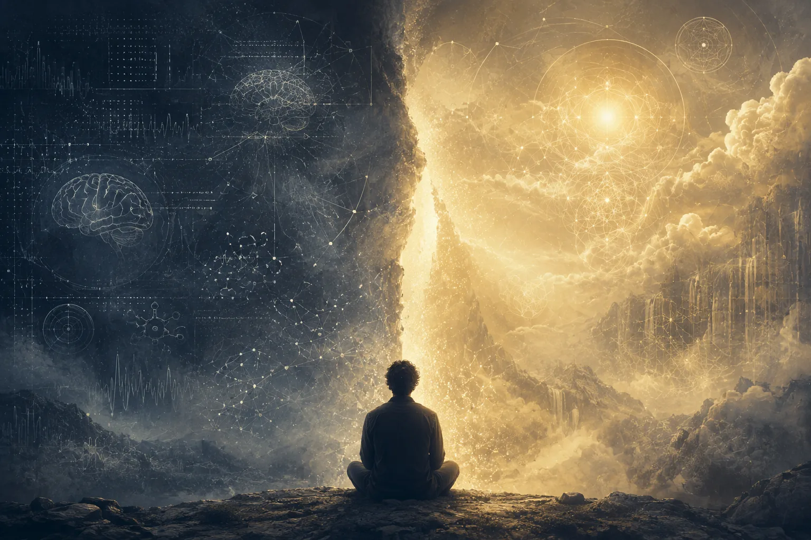
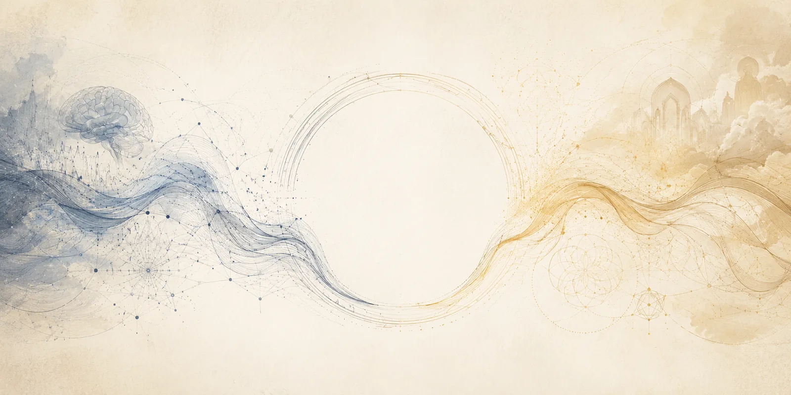

Introduction
In 1811, Percy Bysshe Shelley was expelled from University College, Oxford for publishing a pamphlet the length of a modern newspaper column. The Necessity of Atheism made a pointed epistemological claim that belief must be proportionate to sensory evidence. The argument analyzed the grounds of knowledge, asking what kinds of experience could legitimately be said to tell us something. Two centuries later, neuroscience has enormously amplified our ability to examine this question on a scientific level. We can now scan the brains of monks in meditation and graph the suppression of the default mode network that underlies ego dissolution across Buddhist, Sufi, and Christian traditions. The neural correlates of religious experience are, increasingly, an open book.
Yet the question posed here presupposes that the two are engaged in the same explanatory purpose, that the advancement of one must come at the expense of the other. This zero-sum approach is mistaken. Neuroscience asks how religious states are produced; theology asks what they reveal about human life, spirituality, consciousness, the meaning-making process, and the existence of metaphysical phenomena. Combining them produces a false dichotomy.
Consider the experience of falling in love. A neuroscientist can offer a complete account of oxytocin, dopaminergic reward circuitry, the modulation of threat-response systems, and none of it will tell you whether this love is worth keeping, what it means within a life, or whether the romantic object is a person known or desired. The description is complete; the experience remains philosophically unaddressed. Religious experience can be mirrored in similar terms. The key schism lies in the fact that religious experience is not necessarily derivative of any sensory evidence. Neuroscience can examine the brain to find evidence of the activity marking religious experience, yet the object of that experience remains obscure.
While neuroscience offers the most rigorous account of the mechanisms underlying religious experience, it cannot, by its own methodological limits, account for the phenomenal character of religious states; for this reason, theology and philosophies of mind remain indispensable as the only frameworks capable of addressing the meaning and intentionality that define religious experience. For this reason, neither neuroscience nor theology can claim the final dominance in the interpretation of such occurrences.
Hume’s Epistemological Critique of Religious Experience
We commence with David Hume to examine the epistemological validity of religious experience. In An Enquiry Concerning Human Understanding, he argued that belief must be based on evidence, and that a person’s inner testimony is among the weakest forms of evidence available because it is prone to a myriad of exaggerations, and that causal belief comes from custom or habit.1 When this logic is applied to religious experience, the perceived certainty of a mystical state cannot be considered reliable evidence for theological conclusions.
Mystical experiences across differing traditions can be equally vivid and life-changing, yet they yield mutually incompatible theological conclusions. The Christian faith believes in encounters with a personal God of love; Theravada Buddhism claims a selfless emptiness in which no personal god appears; Sufism advocates for fana, annihilation into an impersonal divine unity. Thus, if inner experience alone could account for theological belief, we would have simultaneously compelling evidence for contradictory religious systems. The most we might be able to say is that the cosmos and human existence are infinitely vast and mysterious, that the various symbolic forms this mystery is given can be hermeneutically valid and practically useful responses. This is in agreement with William James, who contended that individual religious experiences are authentic and meaningful, even when their theological interpretations differ.
All religious experiences, as Hume’s argument implies, cancel each other out epistemically. What remains is the psychological fact that humans across cultures undergo these states in response to the perceived vastness, mystery, and transcendence of the cosmos and human existence.
The Mechanisms of Religious Experience
Given this epistemological quagmire, one must turn to neuroscience to find a common ground from which to evaluate religious experience. If the content of religious experience varies across traditions while the underlying mechanisms are similar, then the mechanism, not the theological interpretation, must be investigated.
Andrew Newberg et al.’s neuroimaging studies, documented in Why God Won’t Go Away, examined Tibetan Buddhist meditators and Franciscan nuns during contemplative states using SPECT imaging.2 Both groups showed decreased activity in the posterior superior parietal lobe, the region responsible for maintaining the brain’s self-orientation and its distinction between the self and the world. When this region’s activity is diminished, the perceived boundaries dissolves. The meditator experienced unity with all things, while the nun experienced union with God. The theological descriptions are incompatible, while the neural event is essentially the same. This finding directly extends Hume’s diversity argument, illustrating that what varies across traditions is interpretation, not the mechanism.
Robin Carhart-Harris et al. further discovered that psilocybin (a serotonin 2A receptor agonist) suppresses the default mode network, producing ego dissolution experiences phenomenologically indistinguishable from those reported by advanced contemplatives across traditions.3 Crucially, subjects with no prior religious background reported encounters with what they described as a presence or an intelligence. This suggests that these states are inherent features of human neural networks, accessible through multiple routes and not necessarily exclusively produced by traditional practices of faith.
Together, these findings establish what neuroscience excels at doing. Neuroscience can anticipate with reasonable accuracy what neural signal will appear and what phenomenological features will be detected. Theology offers no equivalent predictive power. This is a real and important point of distinction, and the scientific advantages here are valid and should not be overlooked.

Noetic Quality and the Limits of Neuroscience
Yet a total reliance on neuroscience is unable to yield results that are spiritually meaningful, or give bearing to whether a given experience reveals something true about the nature of self and reality. Here is where William James’ analysis becomes significant, as he was taking religious experience seriously as a phenomenon, refusing to exempt it from rigorous analysis. In The Varieties of Religious Experience, James identified four characteristic marks of mystical states: ineffability (they resist adequate verbal description), noetic quality (they feel like knowing something), transiency (they are ephemeral), and passivity (they arrive rather than being willed to). The first, third and last of these aspects neuroscience can address perfectly. The second is where the explanatory gap opens.
Noetic quality is a philosophical term signifying that something presents direct apprehension of a greater reality inexplicable by solely brain activity or emotions. In The Interior Castle or The Mansions, Teresa of Ávila described the culminating state of the interior castle as complete stillness and the suspension of ordinary faculties.4 During this, she claimed to have learned something about the nature of reality, something that restructured her understanding of what she was and what the world was. When Ramana Maharshi’s spontaneous encounter with the fear of death at sixteen produced a sudden dissolution of the sense of being a separate self, he described seeing through an illusion he had previously taken for reality.5 The Zen tradition advocates for kensho, the glimpse of one’s original nature, insisting that what has been recognized was always already true, and are only revealed by experiences. These are claims about subjectivity which align with human understanding of the ego as a reflection of symbolism of experience.
Therefore, the preconditions for religious experience can be explained by neuroscience by pointing to the neural state that must be attained prior to religious experience. This is reflective of the “state of mind” that James calls passivity of religious experience, and can be viewed subjectively or objectively, depending on one’s relation to the subject. Conversely, the noetic qualities of religious experiences are only explainable by theology or other theories of the mind, as the specific way in which experience is translated to memory, symbolized, and embedded in our worldview is only explainable via our relationship to the religious experience and the specific attachments we choose to make.

Evaluating Religious Experience Beyond Mechanism
Theological explanations of religious experience center on the notion that both experience and effects on the self are not reducible to the subject’s internal processes. This claim is articulated in the apophatic traditions of Christian mysticism. In the writings of Pseudo-Dionysius the Areopagite, especially in The Mystical Theology, God is described as beyond all categories of being and knowing, and that genuine encounter occurs through a “darkness” that surpasses understanding.6 Under this premise, the divine union moves beyond thought or observation into a form of awareness where the person can participate, and that they perceive the union which dissolves cognition of the world to merge with the “divine essence”. This corresponds to the argument concerning the dissolution of ego, as the perceiver of such phenomena ceases to be influenced by an object view of themself, instead becoming one with the divine presence. This is why theological creeds across traditions often propose metaphors of union and deification. In Eastern Orthodoxy, the concept of theosis emphasizes that spiritual awakening is achieved in uniting with God. This demonstrates that if religious experience allows for participation, then the criteria by which it is evaluated cannot be simply empiricist and adhere to evidential standards, the exact limits of neuroscientific research. By contrast, theology evaluates these experiences according to their transformative effects on the subject’s inner consciousness, correlating them to traditions of an accepted ultimate reality, which constructs an epistemological framework for understanding existence and fostering unified identity in believers.
The same structural logic appears in Islamic mysticism. In Sufism, religious experience is understood as a manifestation of the divine reality within human consciousness. The “unity of being” (wahdat al-wujud) states that all experiences of multiplicity are, at a deeper level, expressions of a single, underlying reality. This framework directly addresses the problem of conflicting religious experiences by interpreting diversity as variation stemming from perspective, which could potentially arise from differences in culture, language, and teachings. What unites these differing traditions is agreement that religious experience involves a disclosure of how to access a more universal level of reality that cannot be explained purely by data or reasoning.
Theological accounts also emphasize that religious experience cannot be isolated from the ethical transformation of the person experiencing. In nearly every tradition, the authenticity of experiences is judged by its yields: humility, compassion, detachment from ego, alignment with a perceived ultimate good. This is an intrinsic aspect of the experience itself. If an encounter with the divine results in pride or cruelty, it is said to be disqualifying as a genuine revelation from the sacred. In Christianity, moral and spiritual “fruits” will prove that an encounter is divine, while pride and cruelty are antithetical to the Holy Spirit’s work, invalidating the experience as truly from God.7
Echoing James, theology offers an account of why such experiences are often ineffable. If the experience is understood as transcendent, then language will naturally fail to encompass it. Ego dissolution can explain this phenomenon: it erases the sense of the individual and subject-object division, which disables the mental framework needed to articulate individual experience into words, as the majority of linguistic frameworks presuppose a subject-object paradigm.
The question, then, is a false dichotomy, and neither discipline can win over the other completely. Neuroscience is stronger for explaining religious experience in the scientific sense, but the signification of such experience is not exhausted by its mechanism, which becomes crucial to understanding the underlying meaning. Describing the neuroscience of encountering the divine is not the same as understanding what is encountered or how the self emerges from the experience.
Hume himself presented a compromise in his essays. After dismantling every rational argument for God, he conceded that some vague sense of order and intelligence in the universe may be defensible while insisting that this failed to empirically point to the God of any particular religion. By today’s standards, we would recognize that neuroscience and theology are asking different questions about the same phenomenon, and that this ontological gap cannot be bridged by either subjective experience or empirical observation alone. It is, as Hume would have recognized, a conclusion in itself.
